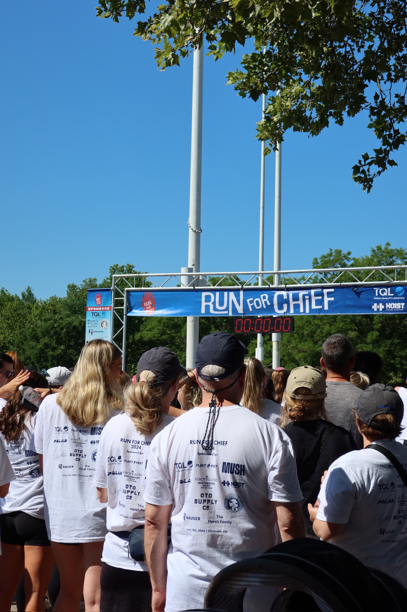
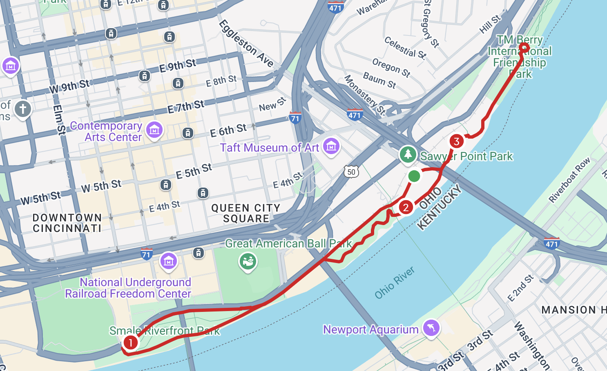
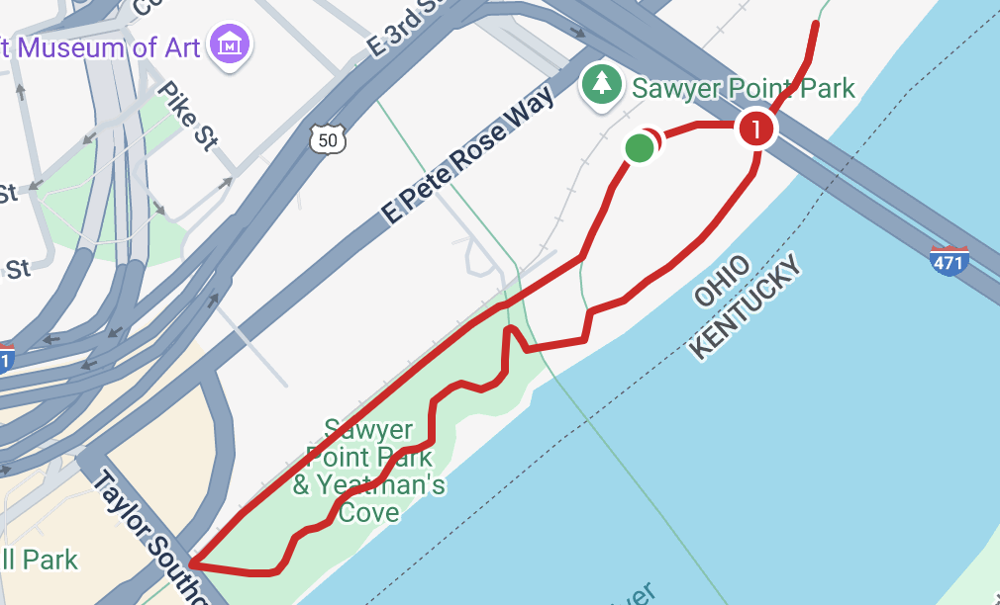

The Run for Chief Race

This year's race will mark the 3rd annual Run for Chief race. Our goal is to bring together Chief's closest family and friends as well as people who never were lucky enough to meet him for an incredible day of fun, laughter, and remembrance.
Similar to the 2023 and 2024 Run for Chief race, the race will be held at Sawyer Point in the heart of Cincinnati! The course will be a 5k loop that runs through the park, along the Ohio River.
Our New Relay Race!
At this year's Run for Chief race there will be a 4-leg relay race with teams composed of 4 people! Each person will run a 1 mile loop around Sawyer Point beginning and ending at the Start/Finish line! When signing up, you can create a new team or join a team with 3 of your best friends!
Want to do the relay but don't have 3 other people to do it with? Join the 'HEART' team and we will assign you to a team before race day!
Sign up before May 1st to ensure that your bibs have your team name on them!
